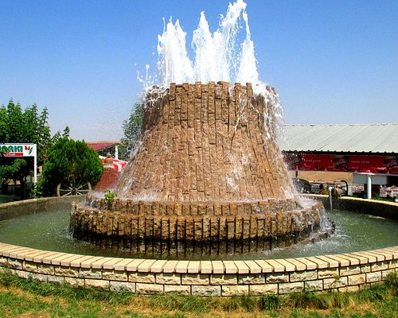
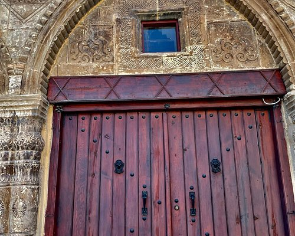
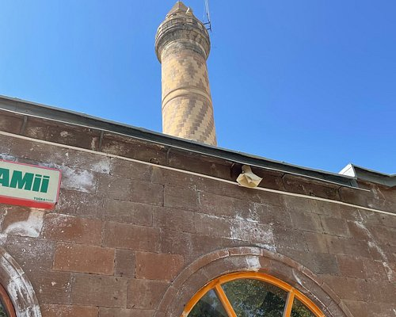
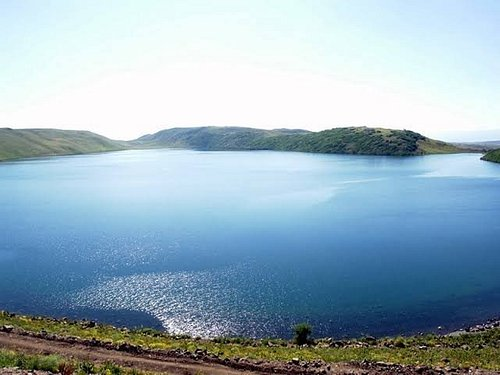

MUŞ KALESİ

Kesin tarihi bilinmemekle birlikte Moğol istilasını müteakip 7. asır ortalarına doğru Hz. Osman zamanında bu çevre ile birlikte kalede savaşlara sahne olmuştur. Sonraları Ermeni Derebeyleri Bağdat'taki Abbasi Halifelerine tabi olarak bu çevrenin ve kalenin idaresi için memur kılınmışlardır.
YILDIZLI HAN

Muş şehir merkezinde Yukarı Çarşı'dadır. 1307’de Miralay Seyfi Bey tarafından yapılmıştır. İki katlı olarak yapılmıştır. Alta kattı kesme taştan, üst katı Selçuklu mimari yapısına uygun olarak kerpiçten yapılmıştır. 613 metre kare üzerin kurulan hanın birinci katında emanethaneler, kuyumcular, manifaturacılar, bakırcılar ve gümüşçüler çalışırdı. İkinci kat ise otel olarak kullanılmıştır. Her iki katta toplam 52 dükkan olan han 1916 Rus İşgalinde tamamen tahrip edilmiştir. İpek yolu üzerinde olan Erzurum-Muş-Bitlis güzergahı takip edilmiştir.
HACI ŞEREF CAMİİ

Bir Selçuklu yapısı olan çok yıkık durumda Aslanlı Han’ın içindedir. Mimari özelliklerinden XVII yüzyıl ile tarihleşmektedir. Ana mekanı kare planlıdır. Ana mekan ortada büyük yanlarda basık kubbelerle örtülmüştür. Sade mihrabı yuvarlak kemerli ve niş biçimindedir. Sonradan eklenen son cemaat yeri ahşaptandır. Sivri kemeri niş biçiminde taç kapı kesme taştandır. 1902’de yapıldığı anlaşılmaktadır. Bu yapıyı Abdülhamit Han Efendi tarafından yaptırılmıştır. 1318 senesinde yapıldı ve tarihe devretti.
HAÇLI GÖLÜ

Haçlı Gölü, Kazan gölü ya da Bulanık Gölü, Muş'un Bulanık ilçesinin güneyinde bulunan volkanik set gölüdür. Göl "Haçlı" ismini güneyindeki Haçlı (Gölyanı) köyünden; "Bulanık" ismini ise suyunun bulanık olmasından dolayı almıştır. Göl kuzeyindeki Kızkopan volkanının yükselmesi ile oluşmuştur.